AI04 — AI Se Padhai Aur Notes Kaise Banayein?
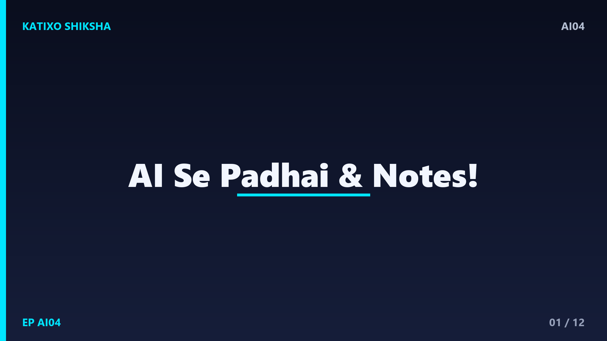
Slide 1दोस्तों, exam सिर पर हों, syllabus पहाड़ जैसा लगे, और notes बनाते-बनाते ही आधा time निकल जाए — ये problem हर student की है। पर सोचो अगर एक smart assistant आपके लिए मुश्किल topics आसान कर दे, notes बना दे, और सवाल पूछकर revision भी करा दे? जी हाँ, AI ये सब कर सकता है। आज Katixo KhojLab की इस episode में हम सीखेंगे कि AI से पढ़ाई और notes कैसे बनाएँ, बिल्कुल आसान Hinglish में, real examples के साथ। चलिए शुरू करते हैं।
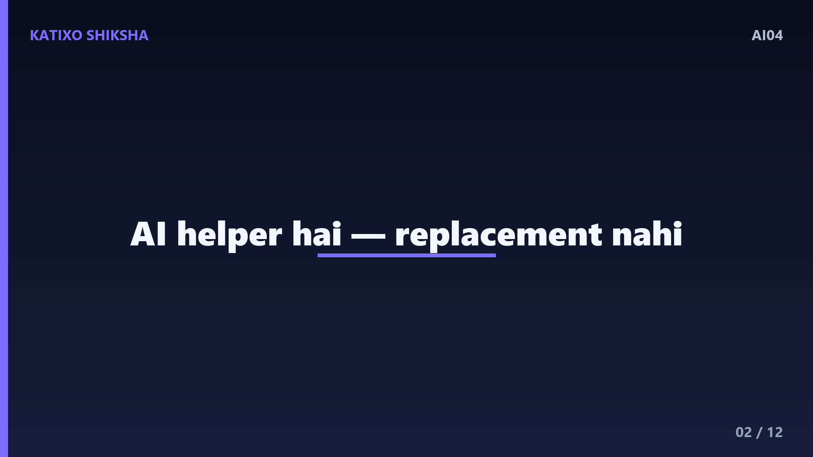
Slide 2सबसे पहले एक ज़रूरी बात समझ लो — AI पढ़ाई में आपकी मदद करता है, आपकी जगह पढ़ता नहीं। ये आपका एक personal tutor की तरह है, जो किसी भी topic को आसान कर सकता है, बार-बार समझा सकता है, और कभी थकता नहीं। पर असली सीखना और याद रखना आपको ही करना है। तो AI को एक मददगार दोस्त समझो, जो आपका time बचाए और मुश्किल चीज़ें आसान बनाए, पर मेहनत और understanding आपकी अपनी रहेगी। यही सही सोच आपको इसका सबसे अच्छा फायदा दिलाएगी।
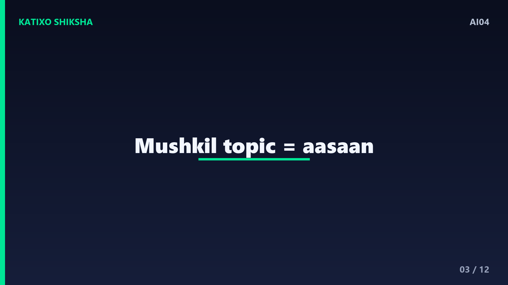
Slide 3अब पहला और सबसे काम का use — मुश्किल topic को आसान भाषा में समझना। मान लो आपको photosynthesis समझ नहीं आ रहा। आप ChatGPT में लिख सकते हो — photosynthesis को class आठ के बच्चे की भाषा में, एक रोज़मर्रा के example के साथ समझाओ। AI इसे बिल्कुल simple शब्दों में समझा देगा। अगर फिर भी confusion हो, तो कहो — और आसान करके बताओ, या एक कहानी की तरह समझाओ। जब तक clear ना हो, पूछते रहो, AI को कभी झुंझलाहट नहीं होती।
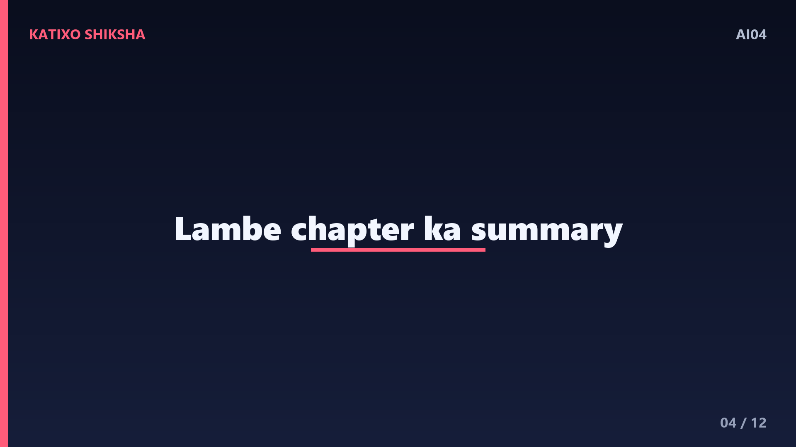
Slide 4अब दूसरा कमाल — लंबे chapter या notes का summary बनाना। मान लो आपके पास एक लंबा paragraph या chapter है जिसे पढ़ने का time नहीं। आप उस text को copy करके AI में paste करो और लिखो — इसका छोटा summary बनाओ, मुख्य points में। AI झट से उसके सबसे ज़रूरी points निकाल देगा। आप ये भी कह सकते हो — इसे पाँच bullet points में दो, या revision के लिए एक छोटी list बना दो। इससे लंबे chapters का सार मिनटों में आपके सामने आ जाएगा, revision के लिए एकदम सही।
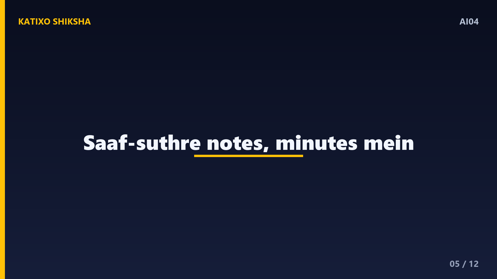
Slide 5तीसरा use जो सबसे ज़्यादा time बचाता है — खुद के notes बनवाना। मान लो आपका topic है भारत की नदियाँ। आप लिख सकते हो — भारत की प्रमुख नदियों पर साफ़-सुथरे study notes बनाओ, headings और bullet points के साथ, ताकि exam में याद रखना आसान हो। AI एक व्यवस्थित notes बना देगा। आप format भी माँग सकते हो, जैसे — एक table बना दो, जिसमें नदी का नाम और उसका उद्गम हो। ऐसे organized notes बनाना अब घंटों का नहीं, मिनटों का काम है।
Slide 6अब चौथा शानदार use — revision के लिए खुद के सवाल बनवाना। पढ़ाई के बाद सबसे अच्छा तरीका है खुद को test करना। आप AI से कह सकते हो — इस topic पर मुझसे दस सवाल पूछो, एक-एक करके, और मेरे जवाब check करो। AI एक quiz master की तरह आपसे सवाल पूछेगा और बताएगा कि कहाँ सही, कहाँ गलत। आप MCQ भी बनवा सकते हो — इस chapter पर पाँच multiple choice सवाल answer के साथ बनाओ। ये active revision exam की तैयारी में सोने जैसा है।
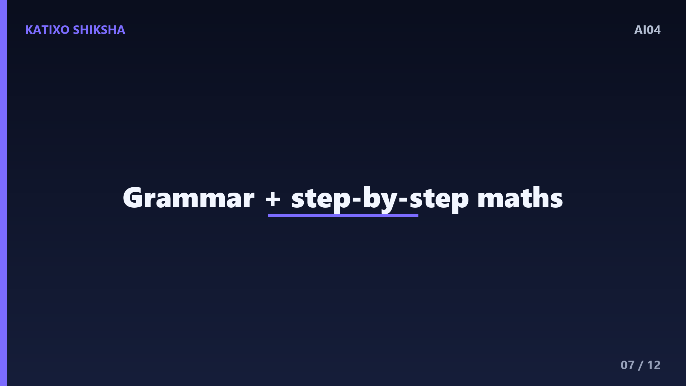
Slide 7पाँचवाँ use खास तौर पर languages और maths के लिए। English सीखनी हो तो AI से grammar सही करवाओ, या कहो — इस paragraph की गलतियाँ ठीक करके समझाओ कि क्यों गलत थीं। maths में किसी सवाल को कहो — step by step हल करके समझाओ, ताकि method clear हो जाए। ध्यान रहे, सिर्फ़ जवाब मत लो, हमेशा method और कारण पूछो, क्योंकि exam में आपको खुद solve करना है। AI से process सीखो, सिर्फ़ answer रटो मत।
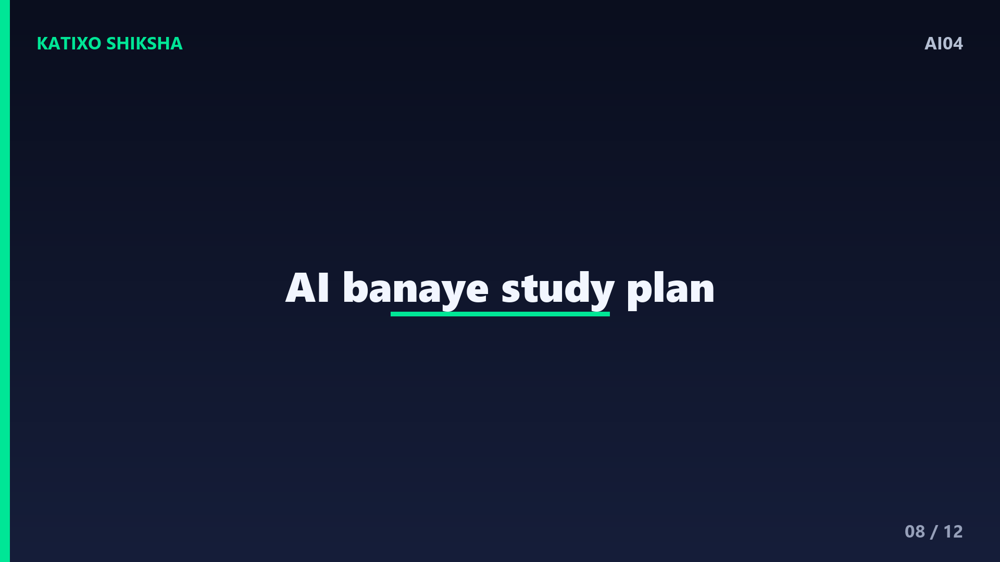
Slide 8अब एक study plan भी AI से बनवा सकते हो, जो बहुत काम आता है। मान लो आपकी exam बीस दिन में है। आप लिख सकते हो — मेरे पास बीस दिन हैं और ये पाँच subjects हैं, रोज़ तीन घंटे पढ़ सकता हूँ, एक practical study plan बना दो। AI दिन-वार एक schedule बना देगा, जिसमें हर subject को सही time मिलेगा। आप इसे अपने हिसाब से adjust भी करा सकते हो। एक साफ़ plan होने से पढ़ाई का दबाव कम होता है और focus बढ़ जाता है।
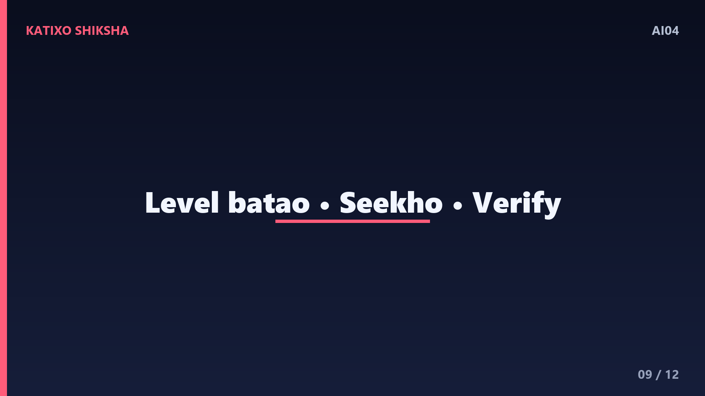
Slide 9अब कुछ ज़रूरी tips. पहली — हमेशा अपनी class या level बताओ, जैसे class दस के लिए, तब notes और explanation बिल्कुल आपके level के बनेंगे। दूसरी — AI से सीखो, copy मत करो, assignment सीधे paste करना आपकी अपनी समझ नहीं बढ़ाता। तीसरी — किसी भी fact, date या formula को अपनी किताब से एक बार ज़रूर मिला लो, क्योंकि AI कभी-कभी छोटी गलती कर सकता है। AI को सीखने का tool बनाओ, shortcut नहीं, तभी असली फायदा मिलेगा।
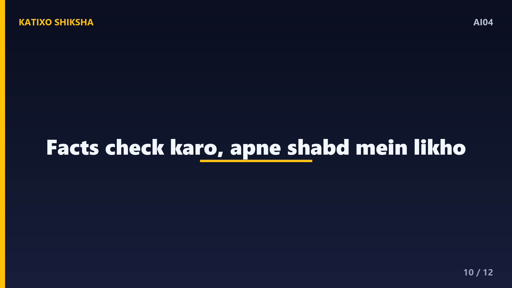
Slide 10एक बहुत ज़रूरी सावधानी, जिसे student अक्सर भूल जाते हैं। AI कभी-कभी गलत जानकारी पूरे यकीन से दे देता है, इसे hallucination कहते हैं। इसलिए exam की पढ़ाई में कोई भी important fact, definition या formula हमेशा अपनी official किताब या teacher से confirm करो। AI को अपनी पढ़ाई का starting point बनाओ, final authority नहीं। और हाँ, सबसे अच्छा सीखना तब होता है जब आप AI के बनाए notes को खुद एक बार अपने शब्दों में दोबारा लिखो। इससे चीज़ें दिमाग में पक्की बैठ जाती हैं।
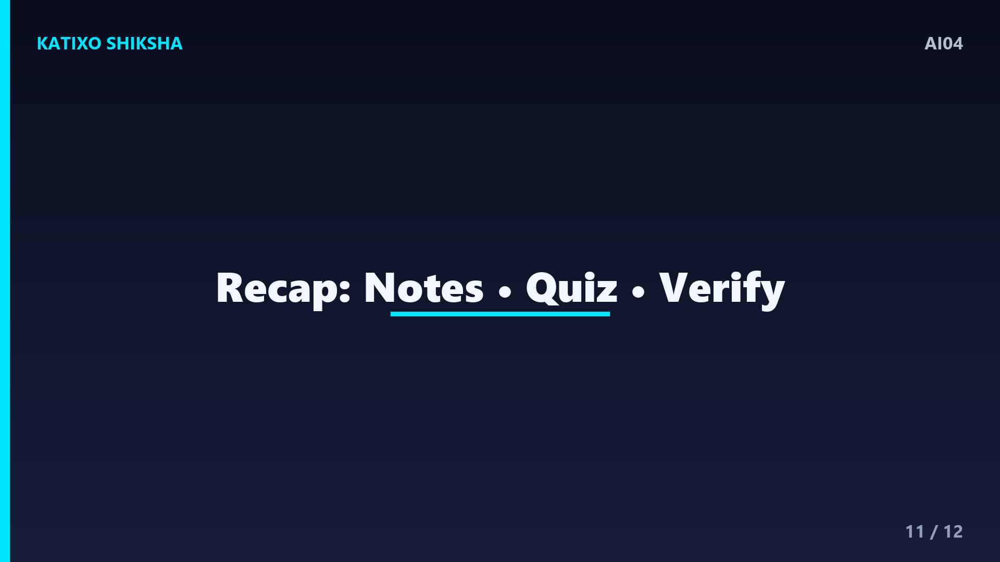
Slide 11तो चलिए अब तक की पूरी बात का एक quick recap कर लेते हैं, तीन आसान points में। पहला — AI से आप मुश्किल topics आसान करवा सकते हो, लंबे chapters का summary और साफ़ notes बनवा सकते हो, बस अपनी class ज़रूर बताओ। दूसरा — खुद को test करने के लिए AI से सवाल और quiz बनवाओ, maths में method सीखो, और exam के लिए study plan बनवाओ। तीसरा — AI से सीखो, copy मत करो, और हर ज़रूरी fact अपनी किताब से एक बार ज़रूर check करो।
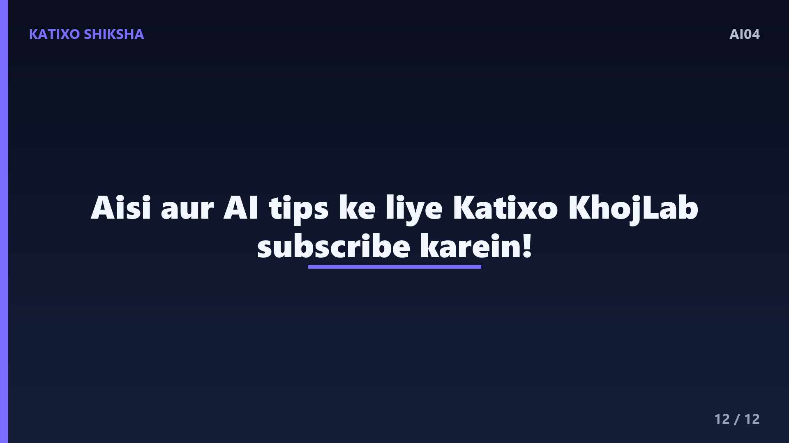
Slide 12तो दोस्तों, आज आपने देखा कि AI एक बेहतरीन study partner बन सकता है, जो आपका time बचाए, मुश्किल चीज़ें आसान करे, और revision को मज़ेदार बना दे। पर याद रखो, मेहनत और समझ आपकी अपनी रहेगी, AI सिर्फ़ रास्ता आसान करता है। तो आज ही अपने किसी मुश्किल topic को AI से समझवाओ और फर्क खुद देखो। ऐसी और AI tips ke liye Katixo KhojLab subscribe करें, और इस video को अपने दोस्तों के साथ ज़रूर share करें। मिलते हैं अगली episode में!